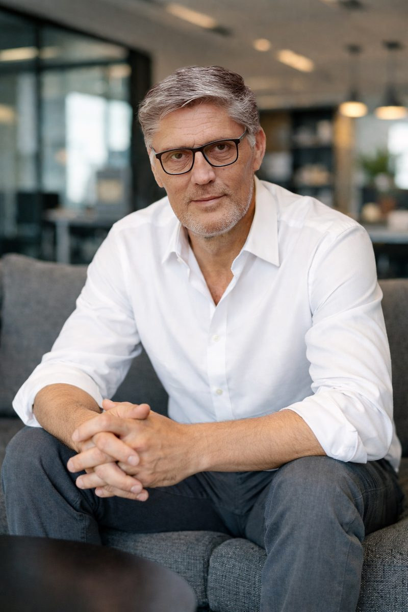

I help leaders and growing companies through change, as a coach for people and as a fractional COO for businesses.
After 23 years at Microsoft in EMEA, Middle East and Africa, and Corporate HQ roles, I now work independently from Palma de Mallorca with clients across Europe.

One path is for individuals who want to change direction. The other is for companies that want to grow well.
Some senior professionals reach a point where their career or life no longer fits, even though everything looks fine from the outside. I work with them one to one to get clear on what comes next, and to build the courage and consistency to get there.
This work runs under my coaching brand, Journey to Change.
Visit Journey to Change →I help international software companies establish and grow their business in Europe. As COO and Head of Leadership Development at Start Expand, I build European teams, processes and go-to-market plans, and I support founders and new leaders as their organisations grow.
A fractional COO is a senior operations leader who works with a company part-time, so the company gets that experience without a full-time hire.
Visit Start Expand →I spent 23 years at Microsoft, where I led teams across regions and coached around 300 people alongside my day job.
In 2017 I left corporate life to focus on helping people and organisations change well. I trained as a coach with CTI, the Co-Active Training Institute, and I bring both sides of my experience to every engagement: the operational reality of running a business, and the personal side of leading through change.
I live in Palma, where I also sail whenever I can.
If you'd like to talk, send me a message and I'll reply personally.
Or email me directly at
info@schellscheidt.net